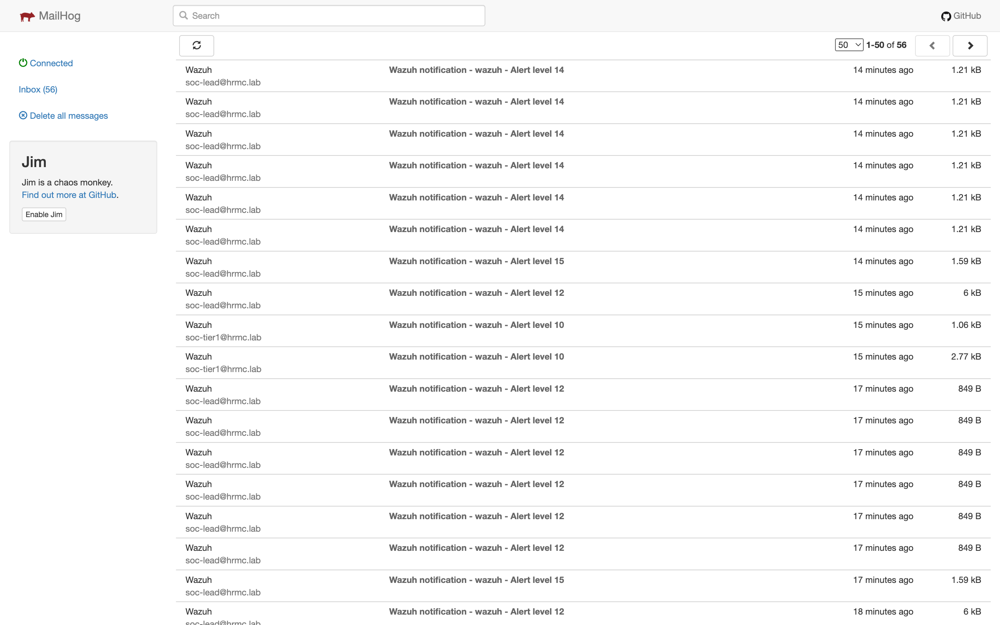
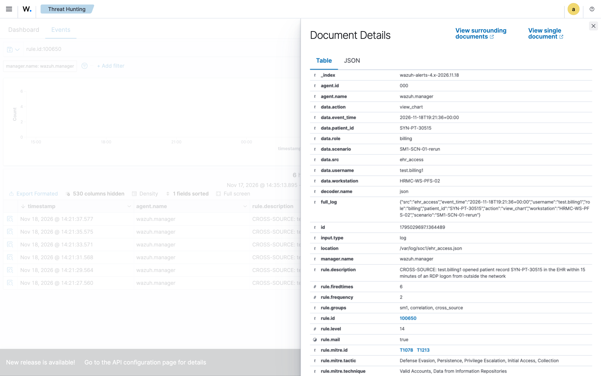
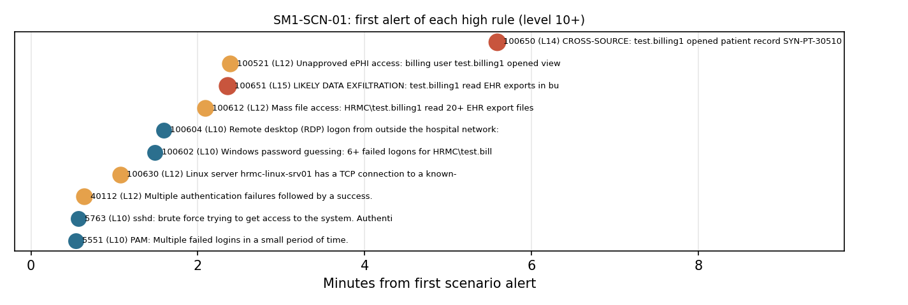

Care Access Navigator
Security Monitoring 1: Final Project Submission
Monitoring environment, security event analysis, monitoring implementation and reporting with Wazuh, a live Linux agent and imported Windows samples
| Prepared by: | Akhila Chennamaneni, IAM & GRC Analyst (author) |
| Organization: | HealthLine Regional Medical Center (HRMC), Care Access Navigator (CAN) capstone |
| Course: | Security Monitoring 1 (DAE 6-Month Cybersecurity, Cohort 2) |
| Scope: | All rubric criteria |
| Environment: | Wazuh 4.9.2; live Linux agent hrmc-linux-srv01; Windows Security samples (option B, instructor-approved); capstone Keycloak and EHR logs |
| Date: | November 18, 2026 |
Windows source (option B, agreed with the instructor): no live Windows host was available, so Windows Security events were
imported as samples in the Microsoft Security log schema (event IDs 4624, 4625, 4634, 4663, 4732, 5156). Every imported event is tagged
"sample": "imported-synthetic". The Linux source is live: a Debian 12 server (hrmc-linux-srv01) runs the official Wazuh agent 4.9.2,
connected to the manager over the agent protocol (port 1514/tcp), and its SSH, file and network activity in this report is real.
Summary
| Area | Result |
|---|
| Environment | Wazuh manager + indexer + dashboard, live Linux agent (Active), imported Windows samples, Keycloak and EHR logs; email routing to Tier 1 and the SOC lead |
| Rules | 15 new rules (100600-100651) for authentication, file access and network activity on Windows and Linux, including 2 cross-source correlations; plus the 13 SOC 1 rules |
| Scenario SM1-SCN-01 | 9 of 9 attack steps detected (100%); 117 alerts, 27 at level 10+; median 1.5 s from event to alert |
| Baseline week | 637 normal Windows events over 7 days: 0 high alerts (no false positives at level 10+) |
| Health monitoring | health_check.py checks collection, processing and storage; it caught a real agent outage, and the disk-space check was added after a real storage incident |
| Reporting | Alert template for 3 alert types, operational / coverage / effectiveness metrics, summary report, custom dashboard 'HRMC Security Monitoring' |
Rubric map
| Rubric criterion | Section |
|---|
| Monitoring Environment Setup | 1 |
| Security Event Analysis | 2 |
| Monitoring Implementation | 3 |
| Security Reporting | 4 |
1. Monitoring Environment Setup
1.1 Installation and basic configuration
| Component | Version / image | Configuration |
|---|
| Wazuh manager | wazuh/wazuh-manager:4.9.2 | Custom rules soc1_rules.xml + zz_sm1_rules.xml; email notification; 5 log files under /var/log/soc1; vulnerability detection disabled (section 3.6) |
| Wazuh indexer | wazuh/wazuh-indexer:4.9.2 (OpenSearch) | Single node, TLS certificates from the official generator, 1 GB heap |
| Wazuh dashboard | wazuh/wazuh-dashboard:4.9.2 | https://localhost:5601; custom dashboard imported as saved objects |
| Linux agent | hrmc-linux-agent:1.0 (Debian 12 + wazuh-agent 4.9.2) | auth.log collection, real-time file integrity monitoring of /srv/ehr_exports, outbound TCP command every 30 s |
| MailHog | mailhog/mailhog:v1.0.1 | Test SMTP server for alert email (port 8025 web inbox) |
1.2 Network configuration
# Network configuration (docker network inspect single-node_default), 2026-11-18T19:22:19Z
hrmc-jumpbox 172.21.0.7/16
hrmc-linux-srv01 172.21.0.6/16
single-node-mailhog-1 172.21.0.2/16
single-node-wazuh.dashboard-1 172.21.0.5/16
single-node-wazuh.indexer-1 172.21.0.3/16
single-node-wazuh.manager-1 172.21.0.4/16
# Published ports
single-node-wazuh.manager-1 0.0.0.0:1514-1515->1514-1515/tcp, [::]:1514-1515->1514-1515/tcp, 0.0.0.0:514->514/udp, [::]:514->514/udp, 0.0.0.0:55000->55000/tcp, [::]:55000->55000/tcp
hrmc-jumpbox
hrmc-linux-srv01
single-node-wazuh.dashboard-1 0.0.0.0:5601->5601/tcp, [::]:5601->5601/tcp
single-node-wazuh.indexer-1 0.0.0.0:9200->9200/tcp, [::]:9200->9200/tcp
single-node-mailhog-1 0.0.0.0:8025->8025/tcp, [::]:8025->8025/tcp
# Agent connection
Agent ID: 001
Agent Name: hrmc-linux-srv01
IP address: any
Status: Active
Client version: Wazuh v4.9.2
Last keep alive: 1795029737
2026/11/18 19:19:57 wazuh-agentd: INFO: (4102): Connected to the server ([wazuh.manager]:1514/tcp).
All components share the Docker bridge network single-node_default (172.21.0.0/16). Only the ports analysts and agents need are published:
1514-1515/tcp (agent events and enrollment), 514/udp (syslog), 55000 (API), 9200 (indexer), 5601 (dashboard), 8025 (mail).
1.3 Log collection from Windows and Linux, with verified connectivity
| Source type | How it is collected | Verification |
|---|
| Linux (hrmc-linux-srv01) | Wazuh agent 001: /var/log/auth.log, file integrity monitoring, command output | Agent Active in agent_control and the dashboard (Screenshot 2); agent log: Connected to the server ([wazuh.manager]:1514/tcp); alerts from agent hrmc-linux-srv01 in the index |
| Windows (HRMC-WS-PFS-02, HRMC-FS01 and 4 other workstations) | Imported Security log samples (JSON) read by the manager's logcollector from /var/log/soc1/windows_security.json | logcollector counted the events; 637 baseline events + scenario indexed as data.src = windows_security; rule tester (wazuh-logtest) decodes them into fields |
| Keycloak sign-in / admin, EHR access | Capstone logs (JSON) via logcollector | Alerts with data.src keycloak_login, keycloak_admin, ehr_access |

Screenshot 2: Wazuh endpoints view: agent 001 hrmc-linux-srv01, Debian 12, v4.9.2, status active
1.4 Alert rules for three security scenarios
| Scenario | Windows rules | Linux rules (live agent) | Application rules |
|---|
| Authentication | 100601 failed logon; 100602 6 failures / 2 min (password guessing); 100604 RDP logon from outside the network; 100605 lockout; 100606 privileged group change | Built-in 5760 failed SSH password, 5763 SSH brute force, 5551 PAM failures, 40112 failures followed by success | 100501-100507 Keycloak (SOC 1) |
| File access | 100610 file read; 100611 read on the EHR export share (ePHI); 100612 20+ reads in 60 s | Built-in 554 / 550 / 553 file added / changed / deleted in /srv/ehr_exports (real-time FIM) | 100521 / 100522 EHR record access (SOC 1) |
| Network activity | 100620 connection allowed; 100621 connection to a known-bad address (203.0.113.0/24) | 100630 TCP connection to a known-bad address (outbound_tcp command) | - |
| Cross-source | 100651 mass EHR export reads + outbound to bad address (same user) | | 100650 Windows RDP from outside + EHR record access (same user) |

Screenshot 5: the rule file zz_sm1_rules.xml in Server management → Rules
1.5 Monitoring workflow: alert routing and notification
| Alert level | Routing | Notification |
|---|
| 3-7 | Stored in the indexer; dashboard; daily review | None |
| 8-9 | Tier 1 queue in the dashboard | None (seen within the shift) |
| 10-11 | Tier 1 triage | Email to soc-tier1@hrmc.lab (email_alert_level 10) |
| 12-15 | Tier 1 triage, SOC lead informed immediately | Email to soc-tier1 and soc-lead@hrmc.lab, no delay (email_alerts, level 12) |
During the scenario Wazuh sent 23 emails: 20 to soc-tier1@hrmc.lab,soc-lead@hrmc.lab, 3 to soc-tier1@hrmc.lab (Screenshot 6).
Full escalation workflow (Tier 1 → Tier 2 → Incident Commander) is in the SOC 1 submission, Mermaid diagram soc_alert_workflow.mmd.

Screenshot 6: MailHog inbox, level 14 and 15 notifications to soc-lead@hrmc.lab
2. Security Event Analysis
2.1 Log types and how to read them
| Log type | Key fields | What to look for |
|---|
| Windows Security log | event_id, target_user, logon_type (2 local, 3 network, 10 RDP), ip, status (0xC000006A = bad password), object_name, access_mask (0x1 = read), application, dest_ip | Failures before a success; RDP from outside 10.x; reads on sensitive shares; unusual programs (rclone.exe) talking to the internet |
| Linux auth.log (syslog) | timestamp, host, program[pid], message: Failed / Accepted password for USER from IP | Many failures from one source, then Accepted from the same source |
| Wazuh FIM | file path, event (added / modified / deleted), mode realtime, checksums | Changes in folders holding ePHI, outside change windows |
| Command output (outbound_tcp) | local_ip:port -> remote_ip:port | Connections to addresses that are not the hospital or its suppliers |
| Keycloak / EHR (JSON) | type, error, username, ip, client / role, patient_id, action | Role and action mismatch (billing opening charts), volume, source IP |
Interpretation methodology: (1) identify the source and its schema; (2) normalise time to UTC and the user to the IAM username; (3) compare with the baseline (section 3.5);
(4) group by user, host and source IP; (5) look for sequence (fail → success → access → transfer); (6) confirm across a second source before escalating.
2.2 Annotated log excerpts (real events from this lab)
2026-11-18T19:15:54.319447+00:00 hrmc-linux-srv01 sshd[7818]: Failed password for tjones from 172.21.0.7 port 34978 ssh2
① Linux sshd: a wrong password for tjones from 172.21.0.7 (the jumpbox). One line means nothing; eight in a few seconds is guessing (rule 5763).
2026-11-18T19:16:29.117717+00:00 hrmc-linux-srv01 sshd[7842]: Accepted password for tjones from 172.21.0.7 port 33600 ssh2
② Same user, same source, Accepted: Wazuh rule 40112 joins the earlier failures to this success: the guess worked.
File '/srv/ehr_exports/staged_all_exports.csv' added
Mode: realtime
File '/srv/ehr_exports/export_1.csv' deleted
Mode: realtime
③ Real-time FIM in the EHR export folder: a new combined file appears (staging) and an original is deleted (covering tracks, T1070.004).
ossec: output: 'outbound_tcp':
172.21.0.6:49534 -> 172.21.0.4:1514
172.21.0.6:53766 -> 203.0.113.77:443
④ The 30-second network check: the first line is the agent's own channel to the manager (expected); the second is a connection to 203.0.113.77:443, a blocked address → rule 100630.
{"src":"windows_security","event_time":"2026-11-18T19:17:27+00:00","event_id":"4624","channel":"Security","computer":"HRMC-WS-PFS-02.hrmc.local","target_user":"HRMC\\test.billing1","username":"test.billing1","sample":"imported-synthetic","logon_type":"10","ip":"203.0.113.77","logon_process":"User32","scenario":"SM1-SCN-01"}⑤ Windows 4624, logon_type 10 = Remote Desktop, from 203.0.113.77 (not 10.x): rule 100604. sample: imported-synthetic marks an imported event.
{"src":"windows_security","event_time":"2026-11-18T19:17:56+00:00","event_id":"4663","channel":"Security","computer":"HRMC-FS01.hrmc.local","target_user":"HRMC\\test.billing1","username":"test.billing1","sample":"imported-synthetic","object_name":"\\\\HRMC-FS01\\EHR_Exports\\patients_2026_19.csv","access_mask":"0x1","access":"ReadData","process_name":"C:\\Users\\test.billing1\\AppData\\Local\\Temp\\rclone.exe","scenario":"SM1-SCN-01"}⑥ Windows 4663 with access_mask 0x1 (ReadData) on \\HRMC-FS01\EHR_Exports, by rclone.exe from a Temp folder: a sync tool, not a clinician's program.
{"src":"windows_security","event_time":"2026-11-18T19:18:12+00:00","event_id":"5156","channel":"Security","computer":"HRMC-WS-PFS-02.hrmc.local","target_user":"HRMC\\test.billing1","username":"test.billing1","sample":"imported-synthetic","direction":"Outbound","application":"rclone.exe","protocol":"6","dest_ip":"203.0.113.77","dest_port":"443","scenario":"SM1-SCN-01"}⑦ Windows 5156: rclone.exe connects outbound to 203.0.113.77:443 right after the mass reads → correlated as likely exfiltration (100651, level 15).
{"src":"ehr_access","event_time":"2026-11-18T19:21:26+00:00","username":"test.billing1","role":"billing","patient_id":"SYN-PT-30510","action":"view_chart","workstation":"HRMC-WS-PFS-02","scenario":"SM1-SCN-01-rerun"}⑧ EHR audit: billing user opens a patient chart. On its own this is rule 100521; within 15 minutes of the outside RDP logon it becomes the cross-source alert 100650.
2.3 Correlation between log sources
| Rule | Sources joined | Logic | Result |
|---|
| 100650 (level 14) | Windows Security + EHR application | EHR access by a billing user (100521) AND an RDP logon from outside (100604) for the same username within 15 min | Fired 6 times (one per chart opened) |
| 100651 (level 15) | Windows file access + Windows network | Connection to a known-bad address (100621) AND mass EHR export reads (100612) for the same username within 15 min | Fired; email to Tier 1 + SOC lead |
| 40112 (level 12, built-in) | Linux auth failures + success | Several authentication failures then a success from the same source | Fired for tjones |
Validation finding: on the first run rule 100650 did not fire. The manager log showed "Signature ID '100521' was not found ... Rule '100650' will be ignored":
Wazuh loads rule files alphabetically, so sm1_rules.xml loaded before soc1_rules.xml and referred to a rule that did not exist yet. Renaming the file to
zz_sm1_rules.xml fixed the order (enabled rules 7,033 → 7,034) and the re-run fired 100650. Lesson: every new rule is tested end to end, not just loaded.

Screenshot 4: the cross-source alert 100650 expanded: EHR source fields, rule groups sm1/correlation/cross_source, level 14, MITRE T1078 + T1213
2.4 Complete incident detection scenario: SM1-SCN-01
Story: an attacker guesses the password of a Linux user and of the billing account test.billing1, logs in to the billing workstation by RDP from outside,
reads 30 EHR export files with rclone.exe, sends them to 203.0.113.77 and opens patient charts in the EHR.
| UTC (2026-11-18) | Agent | Source | Rule (level) | Detection |
|---|
| 19:15:54 | hrmc-linux-srv01 | agent | 5760 (L5) | sshd: authentication failed. |
| 19:16:26 | hrmc-linux-srv01 | agent | 5763 (L10) | sshd: brute force trying to get access to the system. Authentication failed. |
| 19:16:30 | hrmc-linux-srv01 | agent | 40112 (L12) | Multiple authentication failures followed by a success. |
| 19:16:29 | hrmc-linux-srv01 | agent | 554 (L5) | File added to the system. |
| 19:16:31 | hrmc-linux-srv01 | agent | 553 (L7) | File deleted. |
| 19:16:56 | hrmc-linux-srv01 | agent | 100630 (L12) | Linux server hrmc-linux-srv01 has a TCP connection to a known-bad address (203.0.113.0/24) |
| 19:17:21 | wazuh.manager | windows_security | 100602 (L10) | Windows password guessing: 6+ failed logons for HRMC\test.billing1 within 2 minutes |
| 19:17:27 | wazuh.manager | windows_security | 100604 (L10) | Remote desktop (RDP) logon from outside the hospital network: HRMC\test.billing1 from 203.0.113.77 |
| 19:17:57 | wazuh.manager | windows_security | 100612 (L12) | Mass file access: HRMC\test.billing1 read 20+ EHR export files within 60 seconds |
| 19:18:13 | wazuh.manager | windows_security | 100651 (L15) | LIKELY DATA EXFILTRATION: test.billing1 read EHR exports in bulk, then rclone.exe connected to 203.0.113.77 |
| 19:18:15 | wazuh.manager | ehr_access | 100521 (L12) | Unapproved ePHI access: billing user test.billing1 opened view_chart for SYN-PT-30500 |
| 19:21:27 | wazuh.manager | ehr_access | 100650 (L14) | CROSS-SOURCE: test.billing1 opened patient record SYN-PT-30510 in the EHR within 15 minutes of an RDP logon fr |

First alert of each level-10+ rule. 100650 appears at minute 5.6 because it fired in the re-run after the load-order fix (section 2.3).
Conclusions: (1) the same attacker is visible in four sources within six minutes; (2) every step was detected, the highest alerts (100651 level 15, 100650 level 14)
pointed straight at data exfiltration and patient-record misuse; (3) 30 EHR export files and the charts SYN-PT-30500 to 30515 must be treated as exposed, which starts the HIPAA
breach risk assessment; (4) root causes: password-only RDP from the internet and a billing role able to read clinical data.
2.5 Alert triage process
| Wazuh level | Severity | Triage target | Escalation criteria |
|---|
| 15 | SEV-1 Critical | Start within 15 min | Always escalate to the Incident Commander; Privacy Officer if ePHI |
| 12-14 | SEV-1 / SEV-2 | Start within 15-60 min | Escalate if confirmed or if ePHI involved; SOC lead already emailed |
| 10-11 | SEV-3 | Start within 8 h | Escalate if a success follows failures or the source is outside the network |
| 7-9 | SEV-4 | Same shift | Escalate only if part of a sequence |
Severity assessment = Impact (data and systems involved) × Urgency (still happening?), as in the SOC 1 and IR1 playbooks.
| False-positive check | Example from this lab | Decision |
|---|
| Is there an approved change? | 4732 'helpdesk2 added to Administrators' on 11 Nov, ticket CHG-2026-0315 | Benign true positive: documented, closed |
| Is it a test account or test window? | Keycloak failures for test.vendor1 (44, z = 2.2): the lockout test | False positive for attack; confirms the lockout control |
| Is the volume an artefact? | 100612 fired twice for one burst (frequency rule re-arming) | Duplicate: one case, not two |
| Does a second source agree? | RDP from 203.0.113.77 + EHR access by the same user | True positive: escalate |
3. Monitoring Implementation
3.1 Monitoring architecture and data flows

Source: diagrams/sm1_architecture.mmd
3.2 Data sources integrated, with evidence of collection
| Data source | Integration | Evidence |
|---|
| Linux server (live agent) | Agent enrollment to wazuh.manager:1515, events on 1514/tcp | Agent 001 Active; alerts 5760, 5763, 40112, 553, 554, 100630 |
| Windows Security (imported samples) | JSON file + localfile log_format json | 637 baseline events + scenario; rules 100600-100651 fire |
| Keycloak sign-in events | JSON file (capstone export) | data.src keycloak_login alerts |
| EHR access audit | JSON file (capstone export) | data.src ehr_access alerts, 100521 / 100650 |
| Keycloak admin events | JSON file (capstone export) | data.src keycloak_admin alerts (SOC 1) |
3.3 Integration steps
- Start the Wazuh single-node stack (official wazuh-docker v4.9.2): generate TLS certificates,
docker compose up -d.
- Add rule files by mounting them under
/wazuh-config-mount/etc/rules/ (soc1_rules.xml, zz_sm1_rules.xml) and log sources as <localfile> entries in ossec.conf.
- Configure email:
email_notification yes, smtp_server mailhog, email_alert_level 10, plus an email_alerts block for level 12 to the SOC lead.
- Build the Linux agent image (
lab/Dockerfile.linux-agent): Wazuh apt repository, WAZUH_MANAGER=wazuh.manager apt-get install wazuh-agent=4.9.2-1, extra config for auth.log, FIM and outbound TCP.
- Run it on the same Docker network; it enrolls automatically (authd, no password in the lab) and appears as agent 001.
- Import Windows samples with
scenario/windows_events.py history; test each rule with wazuh-logtest before relying on it.
- Import the dashboard (
lab/build_dashboard.py, saved-objects API) and schedule lab/health_check.py.
3.4 Configuration files
| File | Purpose |
|---|
wazuh_config/zz_sm1_rules.xml (repo: sm1_rules.xml) | 15 Security Monitoring rules |
lab/agent_ossec_extra.conf | Agent: auth.log, FIM, outbound_tcp command, no auto-restart |
lab/Dockerfile.linux-agent, lab/entrypoint.sh | Linux server image with the agent |
wazuh_config/hrmc_security_dashboard.ndjson | Dashboard saved objects |
SOC 1: wazuh_config/ossec_soc1_excerpt.conf, soc1_rules.xml | Email settings, log sources, application rules |
3.5 Performance baselines and alert thresholds
| Metric | Basis | Mean | Std dev | P95 | Max | Alert threshold |
|---|
| Windows logons per working hour | 7-day sample, 60 working hours | 0.5 | 0.87 | 2 | 2 | 3.1 |
| Windows failed logons per working hour | 7-day sample, 60 working hours | 0.28 | 0.66 | 2 | 3 | 4 |
| File reads per working hour | 7-day sample, 60 working hours | 4.43 | 4.95 | 12 | 18 | 19.3 |
| Outbound connections per working hour | 7-day sample, 60 working hours | 2.82 | 3.78 | 10 | 14 | 15 |
| Failed logons per user per day | 7 days x 6 users | 0.43 | 0.66 | 2 | 2 | 6 |
| File reads per user per active minute | 7 days, 336 user-minutes with reads | 1 | 0.0 | 1 | 1 | 20 in 60 s (rule 100612) |
| Keycloak failed sign-ins per active day | capstone log, 3 active days | 21 | 28.3 | n/a (too few days) | 61 | 5 per user in 2 min (rule 100502) |
Thresholds are set above normal: at least mean + 3 standard deviations and above the highest value seen in the normal week, rounded to a number the rule can use.
The scenario was far beyond them (7 failures in 18 s, 30 reads in 30 s), while the normal week stayed below every threshold (0 high alerts).
Processing baseline: 0 events dropped, analysisd queues at 0%, median 1.5 s (max 2.8 s) from event to alert.

Left: the normal week used for the baseline. Right: alerts by level on the scenario day.
3.6 Health monitoring
lab/health_check.py runs every 15 minutes (cron / launchd) and checks collection status (agents, services, log files, last alert per source),
processing performance (events decoded and dropped, queue usage, remoted discards) and storage utilization (index health and size, indexer disk, host disk, manager queue folder).
Exit code 0 = OK, 1 = warning, 2 = critical; results go to outputs/health_check_*.json.
| Area | Check | Value | Status | Threshold |
|---|
| Collection | Agent wazuh.manager (server) | Active/Local | OK | Active |
| Collection | Agent hrmc-linux-srv01 | Active | OK | Active |
| Collection | Service wazuh-analysisd | running | OK | running |
| Collection | Service wazuh-remoted | running | OK | running |
| Collection | Service wazuh-logcollector | running | OK | running |
| Collection | Service wazuh-syscheckd | running | OK | running |
| Collection | Service wazuh-maild | running | OK | running |
| Collection | Service wazuh-db | running | OK | running |
| Collection | Service wazuh-modulesd | running | OK | running |
| Collection | Log file ehr_access.json | 6 events since start | OK | file monitored |
| Collection | Log file windows_security.json | 39 events since start | OK | file monitored |
| Collection | Log file auth.log | 0 events since start | OK | file monitored |
| Collection | Log file keycloak_login.json | 1 events since start | OK | file monitored |
| Collection | Log file keycloak_admin.json | 0 events since start | OK | file monitored |
| Collection | Last alert from source windows_security | 2 min ago (715 alerts) | OK | <= 60 min (imported sources replay on demand) |
| Collection | Last alert from source keycloak_admin | 1318 min ago (231 alerts) | WARNING | <= 60 min (imported sources replay on demand) |
| Collection | Last alert from source keycloak_login | 2 min ago (201 alerts) | OK | <= 60 min (imported sources replay on demand) |
| Collection | Last alert from source ehr_access | 2 min ago (120 alerts) | OK | <= 60 min (imported sources replay on demand) |
| Collection | Last alert from agent wazuh.manager | 2 min ago (1713 alerts) | OK | <= 60 min (imported sources replay on demand) |
| Collection | Last alert from agent hrmc-linux-srv01 | 6 min ago (212 alerts) | OK | <= 60 min (imported sources replay on demand) |
| Processing | Events decoded (total since start) | 247 | OK | > 0 |
| Processing | Events per second (last interval) | 0.0 | OK | baseline in section 3.3 |
| Processing | Events dropped | 0 | OK | 0 |
| Processing | Highest analysisd queue usage | 0.0% | OK | < 70% |
| Processing | Alerts written | 48 | OK | > 0 |
| Processing | Agent messages discarded (remoted) | 0 | OK | 0 |
| Storage | Indexer cluster health | green | OK | green/yellow (single node) |
| Storage | Alert indices size | 3.6 MB, 1925 alerts in 2 daily indices | OK | trend tracked |
| Storage | Indexer data disk free | 82% (197.9 GB) | OK | > 15% |
| Storage | Host (Mac) disk free | 22.8 GB (9%) | WARNING | > 3 GB (vulnerability detector disabled after it filled the disk on 2026-11-18) |
| Storage | Manager queue folder | 13 MB | OK | < 1,000 MB |
Health-check procedure: OK → nothing; WARNING → Tier 1 checks within the shift (the two warnings above are explained: the Keycloak admin source only replays on demand; the Mac has 9% disk free);
CRITICAL → SOC lead paged, monitoring gap recorded as an incident.
Real health findings during this project.
(1) The first health-check run returned CRITICAL: agent hrmc-linux-srv01 Disconnected (2026-11-18T19:13:12+00:00). Cause: the manager restart pushed shared configuration,
the agent restarted itself, and nothing in the container started it again. Fix: agent restarted and auto_restart disabled; next run OK.
(2) Earlier the host disk fell below 1 GB: Wazuh's vulnerability detector had downloaded 18.6 GB of feeds. It was disabled, the cache removed and the space returned;
the host-disk and manager-queue checks were added so this is caught early next time.
4. Security Reporting
4.1 Standardized alert documentation (3 alert types)
| Field | 100604 Remote RDP logon from outside | 100612 / 100651 Mass EHR export reads → exfiltration | 100630 Linux connection to a known-bad address |
|---|
| Level / severity | 10 / SEV-3 (SEV-1 if followed by data access) | 12 / 15 → SEV-1 | 12 → SEV-2 |
| Source | Windows Security 4624 | Windows 4663 + 5156 | Linux agent, outbound_tcp command |
| MITRE ATT&CK | T1021.001, T1078 | T1005, T1039, T1041 | T1041 |
| Trigger logic | logon_type 10 and ip not 10.x / 127.x | 20+ reads on EHR_Exports in 60 s by one user; then connection to 203.0.113.0/24 | remote address in 203.0.113.0/24 in the 30 s connection list |
| Triage steps | Is the user expected to work remotely? VPN record? Failures before it? | Which files, which process, where did data go? | Which process holds the socket (ss -tnp)? Who is logged in? |
| False positives | Approved remote support through a jump host | Approved bulk export job (scheduled task, change ticket) | Monitoring or update servers mis-listed |
| Escalation | To Tier 2 if from outside AND followed by access | Incident Commander + Privacy Officer immediately | Tier 2; isolate host if confirmed |
| Response | Disable account, revoke sessions, block IP | Disable account, block IP, preserve file-server logs, start HIPAA assessment | Block egress, isolate container/host, collect volatile data |
| Example in this lab | HRMC\test.billing1 from 203.0.113.77 (19:17:27 UTC) | 30 reads by rclone.exe, then 203.0.113.77:443 (19:18:13) | 172.21.0.6:53766 -> 203.0.113.77:443 (19:16:56) |
4.2 Security metrics
| Category | Metric | Value | How it is measured |
|---|
| Operational | Events dropped | 0 | analysisd state file |
| Operational | Mean time to detect (event → alert) | median 1.5 s, max 2.8 s | alert timestamp minus event_time, scenario events |
| Operational | Alert volume (scenario day) | 117 total, 27 at level 10+ | indexer query from scenario start |
| Operational | Notifications sent | 23 | MailHog inbox export |
| Coverage | Log sources | 5 configured; 4 active in the scenario window (Windows samples, Linux agent, Keycloak sign-in, EHR access); Keycloak admin idle (no admin activity, replays on demand) | configured localfiles + agents vs. alerts per data.src |
| Coverage | Scenario types | 3/3 (authentication, file access, network activity) | rules per scenario (section 1.4) |
| Coverage | ATT&CK techniques with a detection | 11: T1005, T1021.001, T1021.004, T1039, T1041, T1070.004, T1078, T1110, T1110.001, T1213, T1485 | rule.mitre.id on alerts that fired |
| Coverage | Servers with an agent | 1/1 (hrmc-linux-srv01) | agent_control |
| Effectiveness | Detection rate | 9/9 = 100% | attack steps with at least one alert |
| Effectiveness | False positives at level 10+ in the normal week | 0 (0.0%) | high alerts with data.src windows_security before the scenario |
| Effectiveness | Rule defects found by testing | 1 (100650 load order), fixed | manager log + re-run |
4.3 Security summary report (18 November 2026)
Overview. Monitoring covered 1 live Linux server, 6 Windows workstations and a file server (imported samples), Keycloak and the EHR. A normal 7-day week was quiet
(no high alerts). On 18 November the attack scenario produced 117 alerts in about 6 minutes, 27 of them high or critical.
Alert trend. Windows activity in the normal week followed working days (file reads 34-59 a day, failed logons 0-5 a day) and fell at the weekend; the scenario day spike is
entirely the attack (see the trend chart in 3.5 and the dashboard below).
Significant findings.
- Critical: likely exfiltration of 30 EHR export files by rclone.exe to 203.0.113.77 (100651).
- Critical: billing account used from outside the network to open patient charts (100650): HIPAA breach risk assessment required.
- High: SSH password guessing succeeded on hrmc-linux-srv01 (40112), followed by staging and deletion in /srv/ehr_exports.
- Operational: one agent outage and one storage incident in the monitoring platform itself, both fixed (section 3.6).
Recommendations. (1) Block RDP from the internet; require VPN + MFA for remote access. (2) Remove clinical-data access from the billing role (least privilege, capstone RBAC).
(3) Use SSH keys and fail2ban-style lockout on Linux servers. (4) Allow-list outbound connections from servers and workstations; alert on sync tools like rclone.
(5) Deploy real Windows agents when hosts are available, to replace the imported samples. (6) Keep the health check scheduled and review the dashboard each shift.
4.4 Real-time dashboard

Screenshot 1: custom dashboard 'HRMC Security Monitoring' (auto-refresh every 30 s): totals, high alerts, alerts by source and agent, alerts over time by level, top rules, users with high alerts, MITRE techniques

Screenshot 3: Threat Hunting, rule.groups:sm1 and rule.level >= 10: 18 hits, from cross-source 100650 down to the password guessing 100602
Files in this submission
| Path (security_monitoring_1/) | Content |
|---|
| wazuh_config/sm1_rules.xml | Rules 100600-100651 (loaded as zz_sm1_rules.xml) |
| wazuh_config/hrmc_security_dashboard.ndjson | Dashboard saved objects |
| lab/Dockerfile.linux-agent, agent_ossec_extra.conf, entrypoint.sh | Live Linux agent server |
| lab/health_check.py | Health monitoring |
| lab/build_dashboard.py | Dashboard import |
| scenario/windows_events.py, run_scenario.sh | Windows samples (baseline + attack) and the full scenario |
| analysis/sm1_analysis.py | Baselines, metrics, charts |
| evidence/ | Scenario alerts (JSON), Windows baseline sample, network config, mail and analysisd exports |
| outputs/ | Baselines, metrics, health checks, charts |
| screenshots/ | 6 dashboard and mailbox screenshots |
| diagrams/sm1_architecture.mmd | Architecture (Mermaid) |